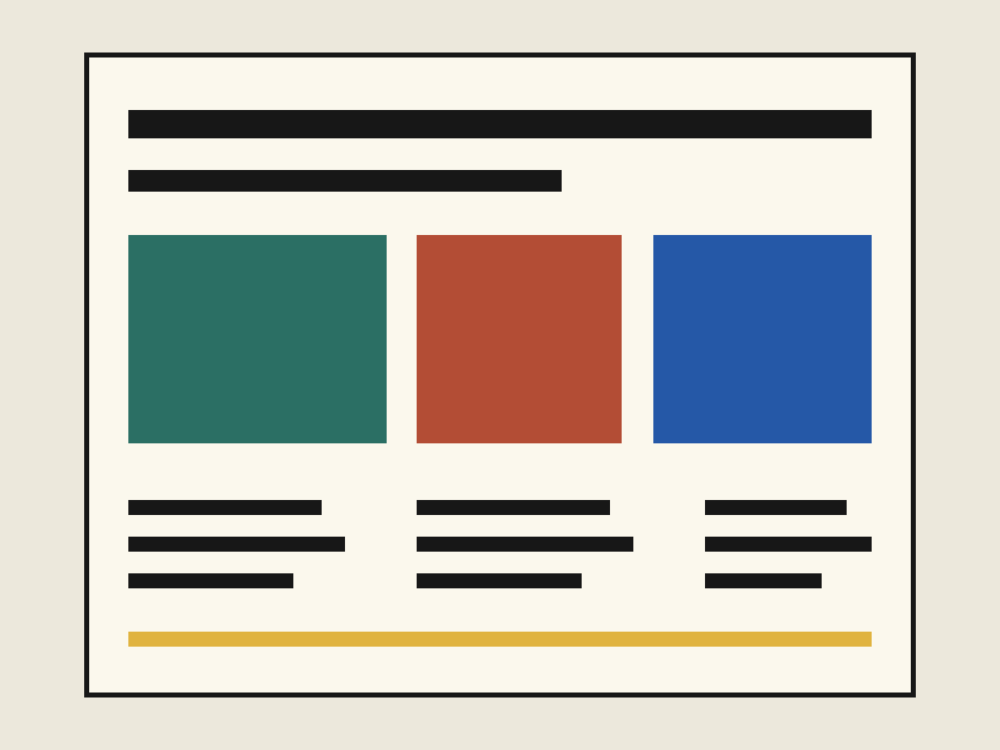

Market Signal
把市场研究转译成可读视觉序列的编辑套件，覆盖印刷、演示和网页。
- 范围
- 编辑系统、图表、报告设计
- 角色
- 信息设计、艺术指导

复杂信息，需要清楚的阅读节奏。
图表、标题和正文使用同一套版式关系，使数据页面既有判断力，也保留编辑感。项目重点不是让图表更响亮，而是让读者更快找到重点。


把市场研究转译成可读视觉序列的编辑套件，覆盖印刷、演示和网页。
图表、标题和正文使用同一套版式关系，使数据页面既有判断力，也保留编辑感。项目重点不是让图表更响亮，而是让读者更快找到重点。
